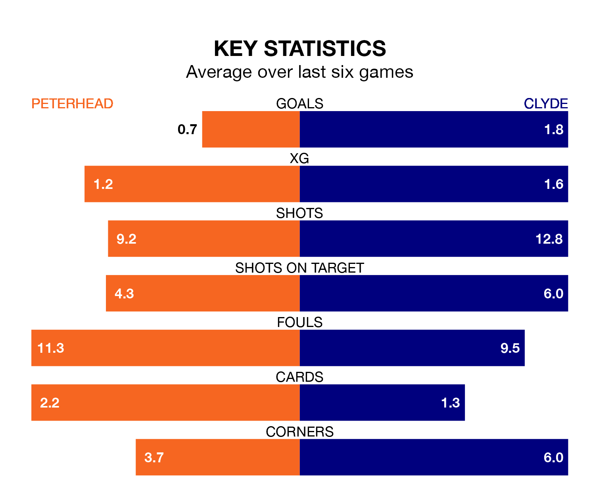

Relegation candidates Clyde face a challenge away against high-flying Peterhead at the Balmoor Stadium on Saturday.
Clyde are rooted to the bottom of the League Two table, and have picked up six wins and 10 draws in their 30 games to date.
The Blue Toon, meanwhile, are second in the standings with 48 points, having won 13 and drawn nine, and are 15 points behind table-toppers Stenhousemuir.
With 45 goals in 30 games so far this season, Peterhead are the league's joint-third-highest scorers with 1.5 goals per game. And they are conceding fewer than average, letting in 31 goals at a rate of 1.0 per game.
Clyde, meanwhile, are average scorers, with 1.3 goals per game. They have conceded 1.7 goals per game.
In the last 10 years, Peterhead and Clyde have played each other on 26 occasions. Peterhead won 15 of them, Clyde four, and they drew seven times.
On average, the Blue Toon scored 1.8 goals and the Bully Wee 1.0 in those matches.
Their last meeting was on February 3, when they played out a 1-1 draw.
With Stuart McKenzie between the sticks, the Blue Toon can rely on one of the league's safest pair of hands. He has kept seven clean sheets in his 29 appearances this season, and only two other 'keepers – Stenhousemuir's Darren Jamieson and Forfar Athletic's Marc McCallum – have been able to prevent the opposition scoring on more occasions in League Two.
In the Bully Wee's net, Brian Kinnear has two clean sheets in seven games.
The hosts are in mixed form in League Two, with one win and four draws from their last six games.
With three wins and a draw over that period, the away team's form is better – they have taken 10 points from 18, compared to Peterhead's seven.
Peterhead's last match was on March 23, a 0-0 draw against Stenhousemuir.
Clyde drew 0-0 with Spartans last time out, also on March 23.
Updated: 12:16 (UTC), 25/03/24